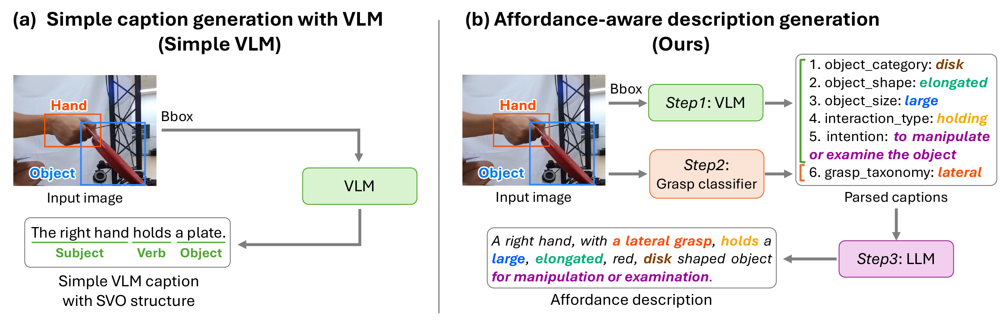
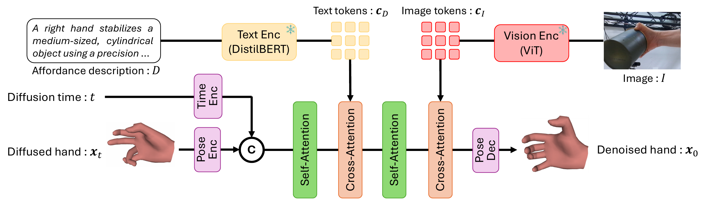
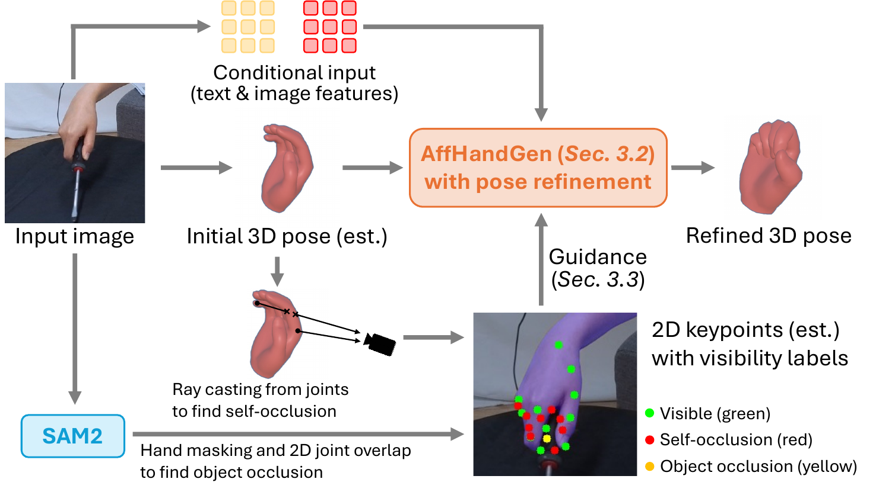
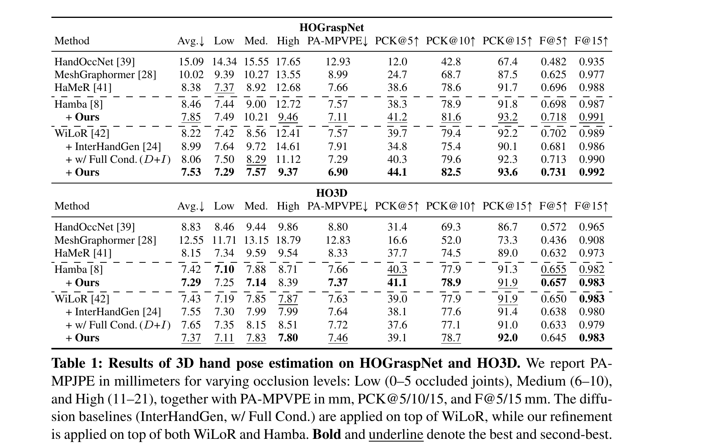
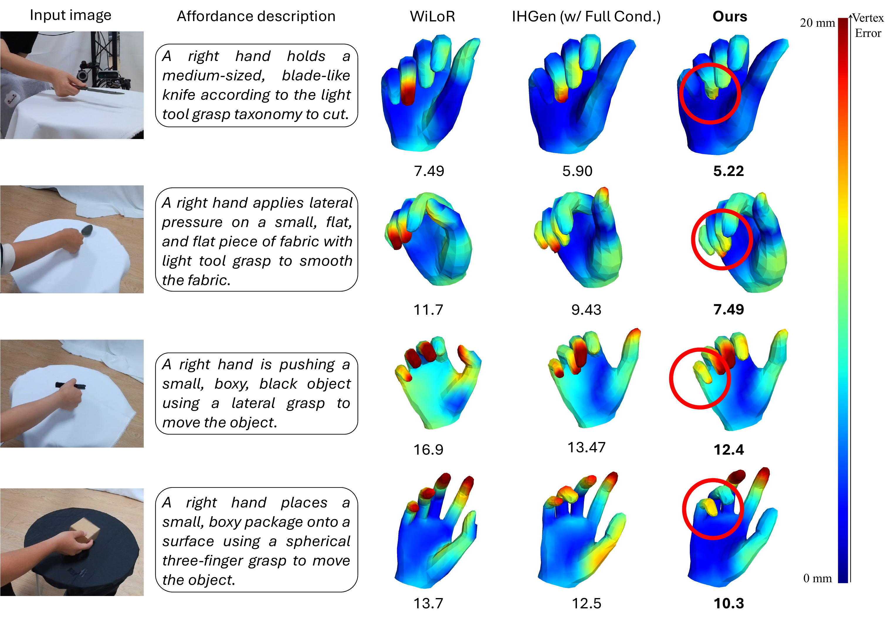

Affordance-Guided Diffusion Prior for 3D Hand Reconstruction
Naru Suzuki1* Takehiko Ohkawa1* Tatsuro Banno1 Jihyun Lee2 Ryosuke Furuta1 Yoichi Sato1
1The University of Tokyo 2KAIST *Equal Contribution
European Conference on Computer Vision (ECCV), 2026

Abstract
How can we infer a 3D hand pose when large portions of the hand are heavily occluded by itself or by objects? Humans often resolve such ambiguities by leveraging contextual knowledge—such as affordances, where an object’s shape and function suggest how the object is typically grasped. We propose a generative prior for 3D hand pose modeling guided by affordance-aware textual descriptions of hand-object interactions. AffHandGen learns the distribution of plausible hand poses conditioned on contextual signals from affordance descriptions and image features, then refines an initial reconstruction into a more accurate and functionally coherent estimate. Experiments on HOGraspNet and HO3D show improvements over recent foundation models for hand reconstruction and diffusion priors, especially under severe occlusion.
Affordance-Aware Description Generation
A standard image caption such as “a hand holds a plate” misses the fine-grained context needed to resolve 3D ambiguity. We construct an affordance-aware description in three steps: a VLM extracts object category, shape, size, interaction, and intent; a dedicated classifier predicts grasp taxonomy; and an LLM combines these elements into one interpretable description. The resulting text encodes both the semantic intent and geometric structure of the interaction.

Multimodal Diffusion Prior
AffHandGen models a multimodal prior over 3D hand pose and affordance. A DistilBERT text encoder represents the affordance description, while a ViT-based vision encoder represents the input image. A transformer denoiser integrates pose, text, and image tokens through cross-attention, enabling the diffusion process to generate poses that agree with both visible evidence and the described affordance.

Occlusion-Aware Pose Refinement
Starting from an estimate produced by a hand reconstruction model, AffHandGen refines uncertain joints while preserving visible evidence. It identifies self-occlusion by ray casting on the MANO mesh and object occlusion by comparing projected joints with a SAM2 hand mask. The diffusion prior is then guided by the initial pose, the multimodal condition, and 2D keypoints to correct the ambiguous regions.

Results
We evaluate on HOGraspNet and HO3D using 3D and 2D reconstruction metrics. The table reports PA-MPJPE and PA-MPVPE in millimeters, PCK at 5/10/15 pixels, and mesh F-scores at 5/15 mm across low, medium, and high occlusion levels. Bold and underlined entries indicate the best and second-best results.

Qualitative Results
The figure below compares AffHandGen with the initial WiLoR reconstruction and a fully conditioned InterHandGen baseline on HOGraspNet. Vertex error is color-coded.

|
© Takehiko Ohkawa |